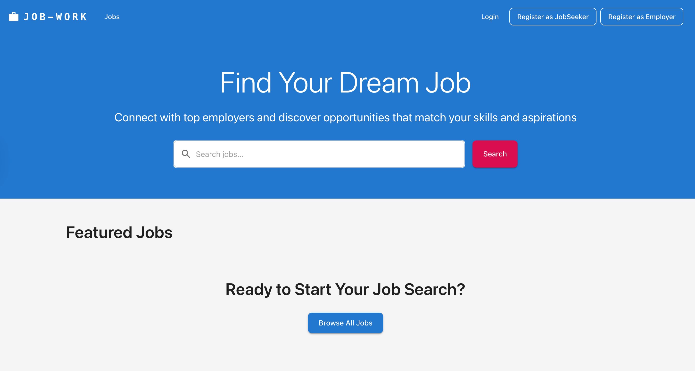

Job Work System
The Job Work System is a task and workflow management platform built to streamline how jobs are assigned, tracked, and completed. It allows users to organize work, monitor progress, and improve team productivity. The system provides structured workflows, making it easier to manage tasks and deadlines efficiently. This project highlights my ability to design systems that focus on productivity, logical data flow, and user-friendly interfaces.

Overview
A task management system that organizes workflows, tracks progress, and boosts productivity with a user-friendly design.
Tools Used
- HTML
- Tailwind CSS
- JavaScript
- React
- Node
- MongoDB